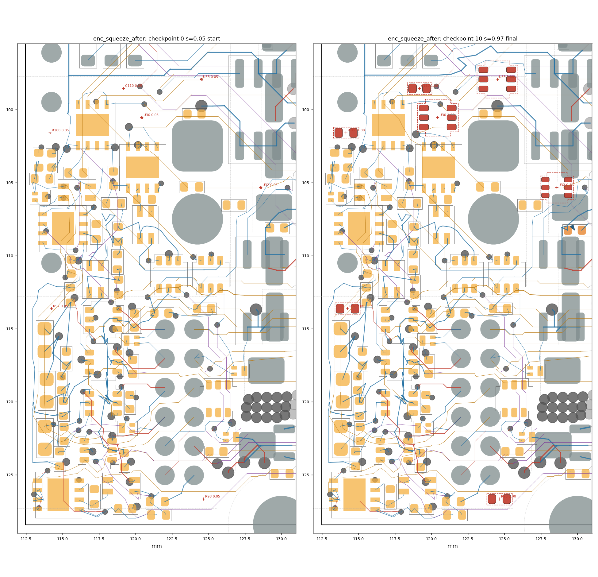
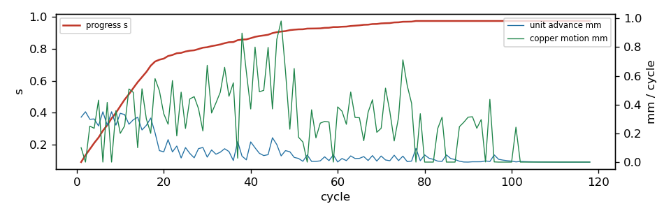

settle run: enc_squeeze_after
118 cycles in 9.6 s, progress s = 0.9746; 6/7 ghosts born; 1 parts moved; 0/0 reroutes verified in 0 rounds. Gate: 11/11 checkpoints pass (baseline 3 violations); length caps hit: 0; check_sync: True.
Region [112.4, 96.0, 130.5, 128.5]; rules clearance 0.1 mm, hole 0.254, edge 0.3, guard 0.015.
57 movable parts, 1196 dynamic segments, 1305 nodes, 7 ghosts.
Orange pads = movable parts (dark orange = moved); grey = fixed; red = ghosts at their current scale; blue arrows = part displacement.
Copper by layer: F red, B blue, In1 green, In2 purple, In3 brown, In4 teal; static copper grey.


Gate per checkpoint
| step | s | tag | unconnected | new_violations | static_missing | fixed_moved | ok | new_desc |
|---|
| 0 | 0.05 | start | 103 | 0 | 0 | [] | True | [] |
| 1 | 0.132 | | 103 | 0 | 0 | [] | True | [] |
| 2 | 0.209 | | 103 | 0 | 0 | [] | True | [] |
| 3 | 0.321 | | 103 | 0 | 0 | [] | True | [] |
| 4 | 0.44 | | 103 | 0 | 0 | [] | True | [] |
| 5 | 0.516 | | 103 | 0 | 0 | [] | True | [] |
| 6 | 0.623 | | 103 | 0 | 0 | [] | True | [] |
| 7 | 0.72 | | 103 | 0 | 0 | [] | True | [] |
| 8 | 0.807 | | 103 | 0 | 0 | [] | True | [] |
| 9 | 0.905 | | 103 | 0 | 0 | [] | True | [] |
| 10 | 0.975 | final | 103 | 0 | 0 | [] | True | [] |
Ghosts
| ref | site | scale | drift_x | drift_y | born |
|---|
| U30 | (120.43, 100.56) | 1.0 | 0.0 | 0.0 | yes |
| U32 | (128.59, 105.34) | 0.822 | 0.0 | 0.0 | no |
| U33 | (124.51, 97.94) | 1.0 | 0.001 | 0.0 | yes |
| R97 | (114.25, 113.64) | 1.0 | 0.0 | 0.0 | yes |
| R98 | (124.65, 126.67) | 1.0 | 0.0 | 0.0 | yes |
| R100 | (114.15, 101.61) | 1.0 | 0.0 | 0.0 | yes |
| C110 | (119.18, 98.56) | 1.0 | 0.0 | 0.0 | yes |
Parts moved
| ref | dx | dy | mm | group |
|---|
| C16 | 0.108 | 0.155 | 0.189 | |
Net length growth (copper inside the region)
| net | region_mm | grown_mm | growth_pct | allow_mm | cap_mm | at_cap |
|---|
| B_SENSE | 17.08 | 1.192 | 7.0 | 1.708 | 3.416 | |
| /ENC_C_DATA | 20.13 | 0.923 | 4.6 | 4.026 | 10.064 | |
| A_SENSE | 13.84 | 0.43 | 3.1 | 1.384 | 2.767 | |
| /EXT_ANALOG_SW | 20.93 | 0.548 | 2.6 | 4.187 | 10.467 | |
| +3V3 | 131.32 | 1.351 | 1.0 | 39.398 | 131.325 | |
| /HALL1 | 29.19 | 0.12 | 0.4 | 5.838 | 14.596 | |
| /ENC_D_DATA | 22.96 | 0.021 | 0.1 | 4.593 | 11.482 | |
| /EXT_ANALOG1 | 30.37 | 0.006 | 0.0 | 6.074 | 15.185 | |
| /A_P | 34.26 | -0.037 | -0.1 | 6.851 | 17.129 | |
| GND | 91.49 | -0.097 | -0.1 | None | None | |
| VMOT | 11.57 | -0.102 | -0.9 | 3.473 | 11.575 | |
Stalled units and their blockers
| unit | hard_walled | blocker | net | ref | margin | floor | pos |
|---|
| GHOST:U32 | | courtyard | | R104 | -0.05 | 0.003 | |
| R104 | yes | pad | /D | J2.2 | 0.007 | 0.015 | [124.25, 107.5] |
| R104 | yes | pad | /D | J2.2 | -0.0093 | 0.015 | [124.25, 107.5] |
| R104 | yes | pad | /D | J2.2 | -0.0093 | 0.015 | [124.25, 107.5] |
| R104 | yes | pad | /D | J2.2 | 0.007 | 0.015 | [124.25, 107.5] |
Absorbed pressure (where demand died)
| mover | blocker | what | hits |
|---|
| R104 | pad | J2.2 [/D] | 720 |
| node1448 | pad | J1.2 [/B_N] | 29 |
| node1449 | pad | J1.2 [/B_N] | 6 |
| node323 | static_track | GND | 1 |
Config
{
"name": "enc_squeeze_after",
"board": "/home/sequoia/pcb/rp2350-motor-controller-lean-jiggle/hardware/tools/settle/configs/data/boards/enc_squeeze_final.kicad_pcb",
"region": [
112.4,
96.0,
130.5,
128.5
],
"rules": {
"guard": 0.015
},
"locked": {
"sides": [
"F"
],
"refs": [
"J1",
"J2",
"J12",
"H3",
"H4",
"U5",
"U9",
"U10"
],
"nets": [
"^/USB_D",
"^/CAN0_"
],
"rects": [
[
130.5,
81.9,
149.6,
128.6
]
]
},
"mobility": {
"default": 1.0
},
"groups": {},
"drive": {
"inflate": [
{
"ref": "U30",
"at": "search",
"radius": 14.0
},
{
"ref": "U32",
"at": "search",
"radius": 14.0
},
{
"ref": "U33",
"at": "search",
"radius": 14.0
},
{
"ref": "R97",
"at": "search",
"radius": 14.0
},
{
"ref": "R98",
"at": "search",
"radius": 14.0
},
{
"ref": "R100",
"at": "search",
"radius": 14.0
},
{
"ref": "C110",
"at": {
"near": "U30",
"offset": [
0.0,
0.0
],
"search": 7.0
}
}
]
},
"step": 0.05,
"snapshots": 10,
"cycles": 600,
"data": "/home/sequoia/pcb/rp2350-motor-controller-lean-jiggle/hardware/tools/settle/configs/data/enc_squeeze_after"
}
Elastic table
{
"default": {
"k": 0.5,
"allow": 0.2,
"cap": 0.5,
"allow_mm": 0.5,
"cap_mm": 2.0
},
"classes": {
"VMOT": {
"k": 0.2,
"allow": 0.3,
"cap": 1.0,
"allow_mm": 1.0,
"cap_mm": 6.0
},
"power": {
"k": 0.2,
"allow": 0.3,
"cap": 1.0,
"allow_mm": 1.0,
"cap_mm": 6.0
},
"usb_5A": {
"k": 0.2,
"allow": 0.3,
"cap": 1.0,
"allow_mm": 1.0,
"cap_mm": 6.0
},
"low_power": {
"k": 0.2,
"allow": 0.3,
"cap": 1.0,
"allow_mm": 1.0,
"cap_mm": 6.0
}
},
"nets": {
"^GND": {
"k": 0.0,
"allow": 1000000000.0,
"cap": 1000000000.0
},
"^(VMOT|Vdrive|VBUS|\\+3V3|\\+1V1|\\+5V_ISO|/V_ENC|/V_SW)$": {
"k": 0.2,
"allow": 0.3,
"cap": 1.0,
"allow_mm": 1.0,
"cap_mm": 6.0
},
"^Net-\\(U(1|6|7|12)-(HO|LO|VB)\\)$": {
"k": 4.0,
"allow": 0.0,
"cap": 0.05,
"allow_mm": 0.0,
"cap_mm": 0.3
},
"^/2[ABCD]G[HL]$": {
"k": 4.0,
"allow": 0.0,
"cap": 0.05,
"allow_mm": 0.0,
"cap_mm": 0.3
},
"^Net-\\(Q[1-4]-[BE]\\)$": {
"k": 4.0,
"allow": 0.0,
"cap": 0.05,
"allow_mm": 0.0,
"cap_mm": 0.3
},
"^Net-\\((R(24|59|62|67|70)|D\\d+)-": {
"k": 2.0,
"allow": 0.05,
"cap": 0.15,
"allow_mm": 0.2,
"cap_mm": 0.8
},
"^/USB_D": {
"k": 4.0,
"allow": 0.0,
"cap": 0.02,
"allow_mm": 0.0,
"cap_mm": 0.1
},
"^/CAN0_": {
"k": 4.0,
"allow": 0.0,
"cap": 0.02,
"allow_mm": 0.0,
"cap_mm": 0.1
},
"^/ENC_[A-D]_(P|N)(_SW)?$": {
"k": 1.0,
"allow": 0.1,
"cap": 0.15,
"allow_mm": 0.5,
"cap_mm": 2.0
},
"^/ENC_[A-D]_TRX_": {
"k": 1.0,
"allow": 0.1,
"cap": 0.2,
"allow_mm": 0.5,
"cap_mm": 2.0
},
"^[ABCD]_PWM_": {
"k": 1.0,
"allow": 0.1,
"cap": 0.25,
"allow_mm": 0.5,
"cap_mm": 3.0
},
"SENSE": {
"k": 1.0,
"allow": 0.1,
"cap": 0.2,
"allow_mm": 0.5,
"cap_mm": 2.0
}
}
}
Log tail
2015 nodes, 1906 sub-segments, 57 movable parts (51 with bound copper), 101 fixed nodes
grandfathered 354 shipped at/below-guard pairs (26 below model rule), 2549 same-net contacts held as attachments
margin census over rule (20um bins, <0 first): -20:4 +0:670 +20:511 +40:648 +60:661 +80:532 +100:456 +120:359 +140:587 +160:373 +180:91811
checkpoint 1: s=0.050 start
cycle 1: s=0.090 ghosts=0/7 blocked=0 adv=0.312mm copper=0.100mm [1s]
checkpoint 2: s=0.132
checkpoint 3: s=0.209
cycle 5: s=0.243 ghosts=0/7 blocked=0 adv=0.252mm copper=0.431mm [1s]
checkpoint 4: s=0.321
checkpoint 5: s=0.440
cycle 10: s=0.440 ghosts=0/7 blocked=0 adv=0.339mm copper=0.200mm [1s]
checkpoint 6: s=0.516
checkpoint 7: s=0.623
cycle 15: s=0.623 ghosts=0/7 blocked=0 adv=0.223mm copper=0.510mm [1s]
checkpoint 8: s=0.720
cycle 20: s=0.738 ghosts=3/7 blocked=0 adv=0.071mm copper=0.337mm [2s]
cycle 25: s=0.783 ghosts=4/7 blocked=0 adv=0.101mm copper=0.234mm [2s]
checkpoint 9: s=0.807
cycle 30: s=0.810 ghosts=4/7 blocked=0 adv=0.034mm copper=0.673mm [2s]
cycle 35: s=0.842 ghosts=4/7 blocked=0 adv=0.073mm copper=0.458mm [3s]
cycle 40: s=0.867 ghosts=4/7 blocked=0 adv=0.141mm copper=0.369mm [3s]
cycle 45: s=0.898 ghosts=4/7 blocked=0 adv=0.170mm copper=0.369mm [4s]
checkpoint 10: s=0.905
cycle 50: s=0.920 ghosts=4/7 blocked=1 adv=0.033mm copper=0.651mm [4s]
cycle 55: s=0.928 ghosts=5/7 blocked=1 adv=0.005mm copper=0.168mm [5s]
cycle 60: s=0.937 ghosts=5/7 blocked=1 adv=0.001mm copper=0.384mm [5s]
cycle 65: s=0.947 ghosts=5/7 blocked=1 adv=0.026mm copper=0.309mm [6s]
cycle 70: s=0.960 ghosts=5/7 blocked=1 adv=0.042mm copper=0.235mm [6s]
cycle 75: s=0.970 ghosts=5/7 blocked=1 adv=0.041mm copper=0.711mm [6s]
cycle 80: s=0.975 ghosts=6/7 blocked=1 adv=0.050mm copper=0.000mm [7s]
cycle 85: s=0.975 ghosts=6/7 blocked=1 adv=0.050mm copper=0.000mm [7s]
cycle 90: s=0.975 ghosts=6/7 blocked=1 adv=0.000mm copper=0.312mm [8s]
cycle 95: s=0.975 ghosts=6/7 blocked=1 adv=0.004mm copper=0.436mm [8s]
cycle 100: s=0.975 ghosts=6/7 blocked=1 adv=0.007mm copper=0.000mm [8s]
cycle 105: s=0.975 ghosts=6/7 blocked=1 adv=0.001mm copper=0.000mm [9s]
cycle 110: s=0.975 ghosts=6/7 blocked=1 adv=0.000mm copper=0.000mm [9s]
cycle 115: s=0.975 ghosts=6/7 blocked=1 adv=0.000mm copper=0.000mm [9s]
stall at cycle 118 (s=0.975): reroute round 1
reroute round 1: 0/0 chains rerouted (0 candidates)
STALL after 118 cycles (40 without advance, 0 reroute rounds): s=0.975, 1 ghosts unborn
checkpoint 11: s=0.975 final
captured 25 frames, 8 line-search traces -> frames.json
wrote traj.json (11 checkpoints) + settle_report.json in 10s: 1 parts moved, 0 nets over allowance, 0 length-cap hits, 0 board-edge hits — run emit.py